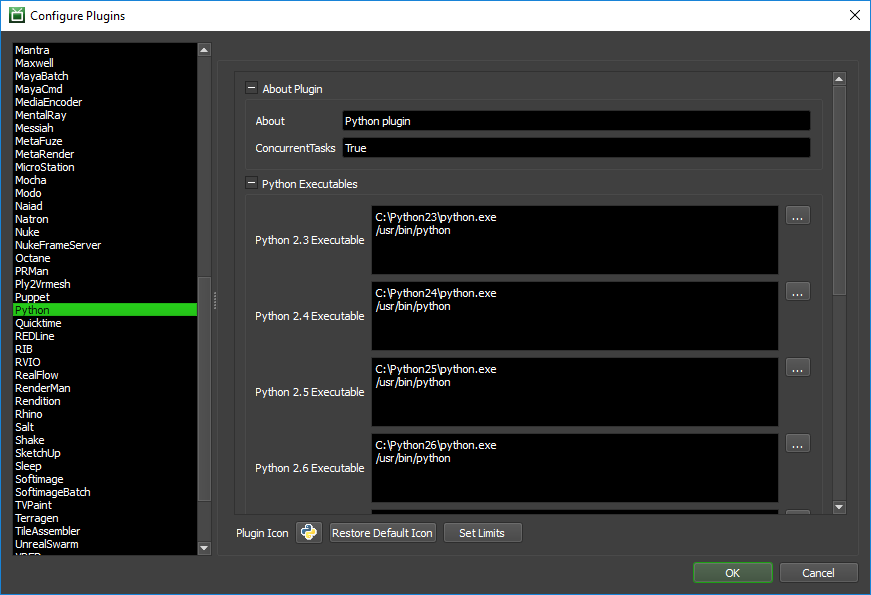

Python¶
Note
This plugin is deemed a potential security risk because it allows users to submit arbitrary Python scripts to Deadline, which are then executed on the render nodes. Customers are encouraged to read the AWS Thinkbox Deadline Shared Responsibility Model before using this plugin in their environment.
Job Submission¶
You can submit Python jobs from the Monitor.

Submission Options¶
The general Deadline options are explained in the Job Submission documentation. The Python specific options are:
Job Type: Choose a normal job or maintenance job. A normal job will let you specify an arbitrary frame list, but a maintenance job requires a start frame and an end frame.
Single Frames Only: If enabled, the plugin will only render one frame at a time even if a single task contains a chunk of frames.
Python Script File: The Python script you want to submit.
Arguments (optional): The arguments to pass to the executable. Use the Start Frame Tag, End Frame Tag and Quote Tag buttons to add their corresponding tags to the end of the current arguments.
Argument Tags: See the Manual Job Submission documentation for more information on these tags.
Frame Tag Padding: Determines the amount of frame padding to be added to the Start and End Frame tags.
Version: The version of Python to use.
Plugin Configuration¶
You can configure the Python plugin settings from the Monitor. While in power user mode, select Tools -> Configure Plugins and select the Python plugin from the list on the left. To get a description of each setting, simply hover the mouse cursor over a setting and a tool tip will be displayed.
Python Executables
Python Executable: The path to the Python executable file used. Enter alternative paths on separate lines. Different executable paths can be configured for each version installed on your render nodes.
Configuration
Additional Python Search Paths: An additional list of paths that will be appended to the PYTHONPATH environment variable. This will allow Python jobs to find custom modules in non-standard locations.
FAQ¶
Which versions of Python are supported?
Python 3.0 to 3.12 are supported. Additional versions can be added when necessary.
Can I execute (Load-Once) a Python script file once on each of my Deadline Workers?
Yes. Select Maintenance as the Job Type.
How can I report % progress of the task?
The Python plugin ships with a basic StdOut handler to report progress based on StdOut/print statements from the Python script you are executing. You can customize this StdOut handler in the Python.py plugin file to your needs or create additional ones. The default regular expression based handler expects to see StdOut with the syntax:
Progress: 10% Progress: 22% Progress: 33% ...Basic usage from your Python script would be:
progress = 20 print("Progress: {}%".format(progress))

{kind=link}